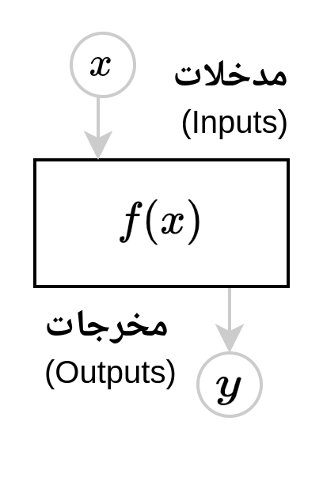
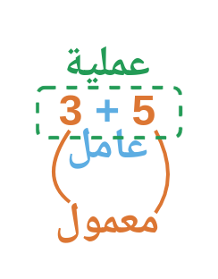
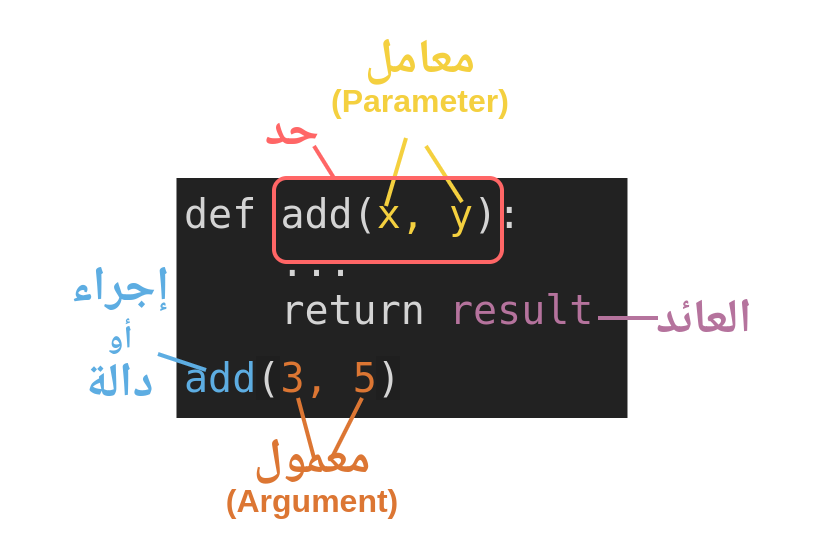

name = "Adam"
age = 25
print("My name is", name, "and I'm", age, "years old")My name is Adam and I'm 25 years old
الإجراء (Procedure) قطعة نص برمجيّ لها اسم، يتم استدعاؤها بمعمولات مختلفة بحسب معاملاته. ويسمى الدالة (Function) أو الروتين (Routine) أو البرنامج الفرعي (Sub-Program).
ونقول استدعي الإجراء (Call) أو نفذه (Execute). ويسمى مكان القطعة التي قامت بالاستدعاء: موقع الاستدعاء (Call-site).
ويمكن استدعاؤه بمعمول واحد:
int(x) لإنشاء العدد الصحيح من النص. مثل: int("12") ينتج: 12.abs(x) للقيمة المطلقة مثل: abs(-10) ينتج: 10.وقد يأخذ معمولين:
round(x, n) مثل: round(10.259, 2) ينتج: 10.26.pow(x, y) لرفع العدد x إلى القوة y. مثل: pow(2, 3) ينتج: 8.وقد يأخذ معمولاً واحدًا لكنَّهُ قائمة:
sum(numbers) مثل: sum([1, 2, 3, 4, 5]) ينتج: 15.max(numbers) لأكبر عدد في القائمة. مثل: max([1, 2, 30, 4, 5]) ينتج: 30.وقد يكون عدد معمولاته لا محدودًا:
print(*values). فعلامة النجمة (*) تشير لقبول عدد مطلق من العوامل. مثل:name = "Adam"
age = 25
print("My name is", name, "and I'm", age, "years old")My name is Adam and I'm 25 years oldفإن print قبلت خمسة عوامل:
"My name is"name"and I'm"age"years old"ولدينا الإجراء help(func) يطلب مساعدة الإجراء المعيَّن، بلا أقواس، هكذا:
help(sum)Help on built-in function sum in module builtins:
sum(iterable, /, start=0)
Return the sum of a 'start' value (default: 0) plus an iterable of numbers
When the iterable is empty, return the start value.
This function is intended specifically for use with numeric values and may
reject non-numeric types.
وقد عرفت أن طلب التنفيذ يكون بالقوسين بعد اسمه ()، وتوضَع المعمولات فيهما.
وفي كل ما سبق كانت العوامل من النوع المؤثر؛ لأنها كانت تؤثر في النتيجة ولا تتأثر بها.
أما المتأثر فنحو فعل الترتيب من مكتبة القائمة: list.sort(xs) فإن المتأثر به القائمة نفسها، مثل:
xs = [40, 20, 10, 30]
list.sort(xs)فأما جملة list.sort فإننا حددنا اسم النوع list وأردنا منه الإجراء sort، وأتينا بالقوسين لطلب تنفيذه، ووضعنا المتأثر xs فيه.
ومع أننا لم نعيِّن النتيجة (بجملة التعيين =)، فقد تغيَّرت (تأثرت) القائمة بالإجراء:
print(xs)[10, 20, 30, 40]بعكس الترتيب بالإجراء الذي ليس من النطاق العام: sorted(xs) فإنَّ القائمة فيه ليست متأثرًا؛ إذْ يُنتِجُ الإجراءُ قائمةً جديدةً ولا يغير القائمة المُدخلة:
xs = [40, 20, 10, 30]
ys = sorted(xs)
print(xs, "لم يعمل الإجراء في القائمة نفسها")
print(ys, "هي قائمة جديدة")[40, 20, 10, 30] لم يعمل الإجراء في القائمة نفسها
[10, 20, 30, 40] هي قائمة جديدةوقد تتساءل ما الفائدة من وجود طريقتين وكلاهما يعمل نفس العمل؟
list.sort(xs) لا ترجع بشيء بل تعدل نفس القائمةsorted(xs) ترجع قائمة جديدةفأما الطريقة الأولى فأصغر في الذاكرة لأنها لا تُنشئ نُسخة كما تفعل الطريقة الثانية. لكن الطريقة الثانية مفيدة إن أردت أن تُبقي القائمة الأصلية كما هي.
والأمر كذلك في الإجراءين:
list.reverse(xs)reversed(xs)ويجتمع المؤثر والمتأثر في نحو:
list.append(xs, 50)فالإجراء list.append يأخذ القائمة، ويضيف إليها القيمة 50. ولذلك نقول الأوَّل متأثر والثاني مؤثر.
print(xs)[40, 20, 10, 30, 50]وقد وضعت اللغات الشيئية (Object-Oriented) مثل بايثون صياغة خاصَّةً: للإجراء المسند إلى الشيء. وبذلك يتحصل لدينا طريقتان كلتاهما تؤديان نفس المعنى:
list.append(xs, 25)xs.append(25)ومثاله أيضًا في الإجراء list.sort للترتيب وكذلك في list.append للإضافة:
xs = [20, 10, 30, 40]
ys = [20, 10, 30, 40]
list.sort(xs)
ys.sort()
assert xs == ys
list.append(xs, 50)
ys.append(50)
assert xs == ysوقد تُعَيَّنُ العوامل بأحد طريقتين:
round(3.14159, 2)round(number=3.14159, ndigits=2) فلا يشترط فيه ترتيب العوامل.ويجوز استعمال الطريقتين معًا في نحو: list.sort(numbers, reverse=True) ويشترط فيه تقدم التعيين بالموضع ليكون في مكانه، ثم يتبعه التعيين بالاسم حيث لا يشترط الترتيب فيه.
وقد رأينا أن بعض المعرَّفات كـlist لا يحتاج إلى استيراد. وبعضها يلزمنا للوصول إليه الاستيراد (import) بل إن أغلب ما يتوفَّر يجب فيه الاستيراد. وليس لذلك قاعدة تضبطه إلا أن تحفظه بالممارسة. وذلك نحو وحدة الرياضيات (math) في نحو:
import math
math.sqrt(16)4.0ويجوز استيراد الإجراء باسمه دون غيره بكتابة from في الجملة على النحو التالي:
from math import log2
log2(1024)10.0كما يجوز استيراد الجميع بحرف النجمة * على النحو التالي:
from math import *
cos(2*pi) - sin(pi/2)0.0لكن استيراد الجميع قد يتعارض مع مسمياتنا فيما بعد، ويصعب أن نعرف ذلك بسهولة، لذلك يجب أن يستعمل بحذر.
والإجراء من حيث التعريف قسمان:
الأول: جملة التعريف (ويسمى التوقيع: Signature) المبتدأة بكلمة def. وهو ثلاثة أجزاء:
الثاني: الجسد (Body). وهو القطعة البرمجية التي جُعِلَ اسمه عنوانًا لها. وقد يتضمن الجسد جملة رجوع (Return Statement) للخروج بنتيجة
تأمل المثال التالي:
def add(x, y):
result = x + y
return resultdef add(x, y)
addx, y ونفترض أنهما من النوع العددي Number (ولم نصرِّح بذلك)Number (غير مصرَّح به)result = x + yreturn result تسمى جملة الرجوع وهي التي؛ ترجع بالنتيجة إلى الموضع الذي طلب الإجراء.ثم يحصل الاستدعاء بذكر اسم الإجراء مع القوسين () لتمرير معمولات لتعيين معاملاته:
add(3, 5)8وإليك صورتان لتوضيح ذلك:


لكي نحفظها نقول:
+، وفي الإجراء قوسا الاستدعاء: ()3 و 5x و yفيكون حاصل استدعاء الإجراء: عمل العامل في المعمولات؛ أي: فعل الفاعل في المفعولات. وهو تحقيق الجملة الفعلية.
وكوْن القوسيْن () عاملاً يعني أن عدمهما لا يُحدِثُ أثر الإجراء. فلو كتبنا مثلاً:
x = addفإن x تشير إلى نفس الإجراء، فيمكن بعد ذلك -مثلاً- استدعاءُ الإجراء به:
x(7, 3)10وهذا قليل الاستعمال إلا فيما يسمى الدوال العالية (Higher-order Functions).
تسمح بايثون بعدم التصريح بأنواع المعاملات إلا أنه يجوز، وذلك على النحو التالي:
from numbers import Number
def add(x: Number, y: Number) -> Number:
result = x + y
return result:)->)ومن الأنواع المبنيَّة في بايثون:
Number وهو النوع الذي ترجع إليه جميع أنواع الأعدادint الأعداد الصحيحة، نحو: 10float الأعداد العشرية، نحو: 10.5str وهي نوع النص، نحو: "Salam"list قائمة وإن شئت تحديد نوع العنصر الواحد فيها؛ فإنك تضعه بين القوسين المربعين، نحو:
list[int]list[float]list[str]للاستزادة راجع: MyPy Type hints cheat sheet.
تأمل الإجراء التالي:
def calculate_grade(score):
if score >= 90:
return "A"
elif score >= 80:
return "B"
elif score >= 70:
return "C"
elif score >= 60:
return "D"
else:
return "F"وعند طلب التنفيذ نعين العوامل. فينتج لنا بطلب calculate_grade(95) نسخة معيَّنة من تفاصيل الإجراء، نسمّيها ظرف التنفيذ (Execution Frame) ؛ يكون فيه المتغير score=95 تكون هذه النسخة حاضرة في ذاكرة البرنامج وقت تنفيذ الإجراء:
if 95 >= 90:
return "A"
elif 95 >= 80:
return "B"
elif 95 >= 70:
return "C"
elif 95 >= 60:
return "D"
else:
return "F"وبطلب تنفيذ calculate_grade(80) يكون الظرف هكذ:
if 80 >= 90:
return "A"
elif 80 >= 80:
return "B"
elif 80 >= 70:
return "C"
elif 80 >= 60:
return "D"
else:
return "F"لاحظ أن نتيجة السطرين بحسب الظرفين المختلفين:
print(calculate_grade(95))
print(calculate_grade(80))A
Bقد تكون العوامل كثيرة في الإجراء على النحو التالي:
def weather_condition(temperature, humidity, wind_speed):
if temperature >= 30 and humidity >= 60 and wind_speed >= 10:
return "Rainy"
elif temperature >= 20 and humidity >= 50 and wind_speed >= 5:
return "Cloudy"
elif temperature >= 10 and humidity >= 30 and wind_speed >= 0:
return "Sunny"
return "Normal"ويكون طلبها بالطريقتين كما تقدَّم، بالموضع أو بالاسم. ولاحظ أن التمرير بالاسم يجوز فيه تبديل الترتيب، وأما القيمة التي تمرر بالموضع فلا بد أن تكون في الموضع.
cond = weather_condition(30, wind_speed=10, humidity=60)
if cond == "Rainy":
print("Don't forget your umbrella!")Don't forget your umbrella!الأصل في العوامل المعرَّفة الوجوب؛. فلو أهملت أحدها فإنك ستواجه بالخطأ:
def weather_condition(temperature, humidity, wind_speed):
pass
weather_condition(30)--------------------------------------------------------------------------- TypeError Traceback (most recent call last) Cell In[21], line 4 1 def weather_condition(temperature, humidity, wind_speed): 2 pass ----> 4 weather_condition(30) TypeError: weather_condition() missing 2 required positional arguments: 'humidity' and 'wind_speed'
تقول رسالة الخطأ (السطر الأخير) أن الإجراء يفتقد معموليْن موضعيين إلزاميين، وهما: humidity و wind_speed.
فلو أردنا أن يكون عمل الإجراء بحسب أحد العوامل بالتعيين، على نحو:
convert_temperature(celsius=32)convert_temperature(fahrenheit=89.6)وإليك معادلة التحويل بين نوعيْ درجة الحرارة:
\[ F = \frac{9}{5} C + 32 \]
فأي معامل نعرفه بقيمة افتراضية فإن بايثون تعتبره اختياريًّا، ولو بالقيمة العدميَّة None. فنعرِّفُ المعاملات بقيَم عدميَّة، ونفحص وجودها بالشرط is not None لنُعمِلَها أو نهملها:
def convert_temperature(celsius = None, fahrenheit = None):
if celsius is not None:
fahrenheit = (9 / 5) * celsius + 32
return fahrenheit
elif fahrenheit is not None:
celsius = (fahrenheit - 32) * (5 / 9)
return celsiusنتأكد:
assert convert_temperature(celsius=32) == 89.6
assert convert_temperature(fahrenheit=89.6) == 32ومن خصائصها أن المتغيرات في الداخل لا تظهر للخارج.
def calculate_bmi(weight: float, height: float) -> float:
bmi = weight / (height ** 2)
return round(bmi, 2)فنتوقع وقوع خطأ هنا لأن bmi غير معرفة إلا في نطاق الإجراء:
print(bmi)--------------------------------------------------------------------------- NameError Traceback (most recent call last) Cell In[25], line 1 ----> 1 print(bmi) NameError: name 'bmi' is not defined
تقول رسالة الخطأ (السطر الأخير) أن المتغير bmi غير معرَّف. وهذا منطقي لأن النطاق الخارجي لا يعلم ما تكنه النطاقات الداخلية الخاصة بالإجراءات. وهو أمر مطلوب جدًّا ومرغوب في البرمجة. وذلك يعني أننا لن نتعب كثيرًا في اختيار الأسماء داخل كل إجراء، مخافة التعارض.
وعلى العكس فإن المعرَّفات الخارجة معروفة في الداخل؛ وذلك يعني أنها يمكن أن تعمل في الإجراء بشكل غير مباشر. أي أنها معمولات غير مصرَّح بها (هو: max_length في هذا المثال):
max_length = 8
def check_password_strength(password: str) -> str:
if len(password) > max_length:
return "strong"
elif len(password) > max_length // 2:
return "medium"
return "weak"
مستويات النطاقات (Scopes) من الداخل إلى الخارج:
print().نصيحة: اجعل الاستعمال تاليًا لأخص نطاق؛ تَسْلَم. فهو كاستعمال الضمائر في اللغة: لا نحب أن تبعُد عما أُبدلت عنه إذ ذلك مظنَّة الإبهام. لكن قد يكون من المعرَّفات ما هو ثابت ومعمولٌ به في كل مكان. فهو أشبه بالإعدادات أو الضبط للبرنامج كله. ومثل ذلك الأليق فيه أن يكون في نطاقٍ أعم.
تُخرج الإجراءات نتائج معالجتها بإحدى طريقتين:
الأولى: الرجوع: حيث ترجِع النتيجة بجملة return لموضع طلب الإجراء، وغالبًا ما يتم تعيينه لمتغير، نحو: y = sqrt(x).
الثانية: المفعول: نحو: list.sort(xs) حيث يعدِّل الإجراء العامل الذي تم تمريره إليه؛ ولذلك نسميه مفعولا به.
وذلك مثل print() فإن أحد معمولاته غير مذكور (وهو المفعول)، وهو: file=sys.stdout ولأجله تكتب النتيجة على الشاشة.
والإجراء دائمًا يرجع بنهاية آخر جملة فيه، لكن الذي لا يصرَّحُ فيه بكلمة الرجوع return تُقدَّر له القيمة العدمية: None ويسمى الإجراء حنيها خاويًا (void).
فائدة: إذا رأيت إجراءً خاويًا فاعلم أن له مفعولاً، سواء من معمولاته المباشرة أو غير المباشرة. والسبب في ذلك أنه لا بد للإجراء من أن يُثمر، وإلا فالإجراء الذي ليس له أثر، فإن وجوده كعدمه.
تأمل المثال التالي الذي يأخذ معمولات ثم لا يرجع بشيء، لكنه يُظهر النتيجة على الشاشة:
def print_decorated(message: str, n: int):
print("=" * n)
print(message)
print("=" * n)
print_decorated("Salam alykom", 15)===============
Salam alykom
===============قد تتساءل كيف تعمل print وهي تأخذ عددًا لا محدودًا من المعمولات؟ حتى نجيب عن ذلك ننظر في عملية فك الأقواس وهي علامة النجمة * قبل المتغيِّر المشير لمجموعة، على النحو التالي:
xs = [10, 20, 30]
print(xs)
print(*xs)[10, 20, 30]
10 20 30لاحظ الفرق بين الطلب الأول والثاني:
xs ككل، أي: كقائمة من ثلاثة أعناصرprint بعد فك الأقواس كأنك كتبت: print(10, 20, 30)وحين تستعمل علامة النجمة في تعريف معاملات الإجراء، فإن أي معمول موضعي زائد عن العدد، يكونُ فيه كصفّ (وسيأتي الكلام عن الصف في باب الجمع المرتبة). وبالمثال يتضح المقال. وقد اصطُلح على تسميته args وهي اختصار كلمة Arguments:
def show(a, *args):
print(a)
print(type(args), args)
print('print:', *args)
show(1, 2, 3, 4, 5)1
<class 'tuple'> (2, 3, 4, 5)
print: 2 3 4 5وكذلك العوامل المعيَّنة بالاسم، لكن بالنجمتين ** وتكون قاموسًا (وسيأتي الكلام عنه في باب المجموعة المرقمة) ومعنى الكلمة kwargs هو: Keyword Arguments:
def show(a, **kwargs):
print(a)
print(type(kwargs), kwargs)
print('print:', *kwargs)
show(a=1, b=2, c=3, d=4, e=5)1
<class 'dict'> {'b': 2, 'c': 3, 'd': 4, 'e': 5}
print: b c d eوقد يجتمعان في نفس الإجراء *args و **kwargs نحو:
def show(x, y, *args, **kwargs):
print(x, y)
print(type(args), args)
print(type(kwargs), kwargs)
show(1, 2, 3, 4, 5, a=1, b=2, c=3)1 2
<class 'tuple'> (3, 4, 5)
<class 'dict'> {'a': 1, 'b': 2, 'c': 3}ولا بد من تقديم الموضعية قبل الاسمية.
للمزيد راجع العوامل الخاصة.